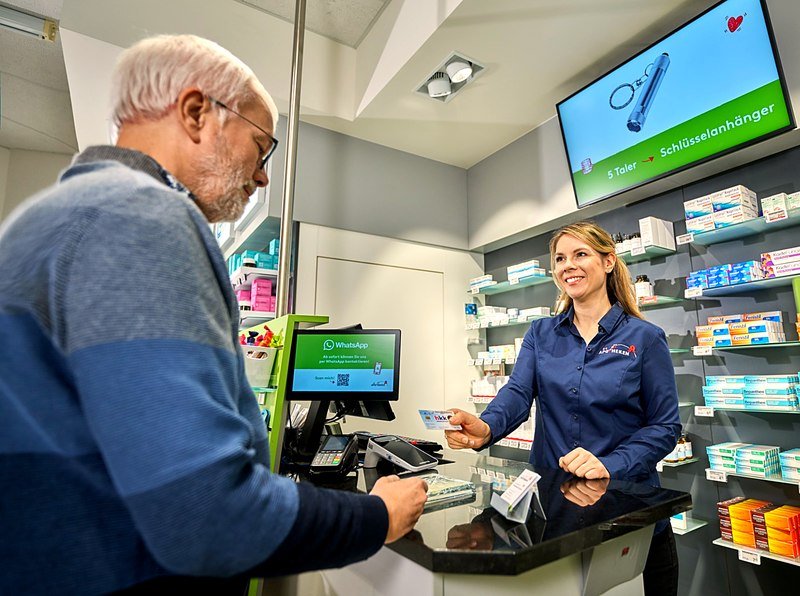
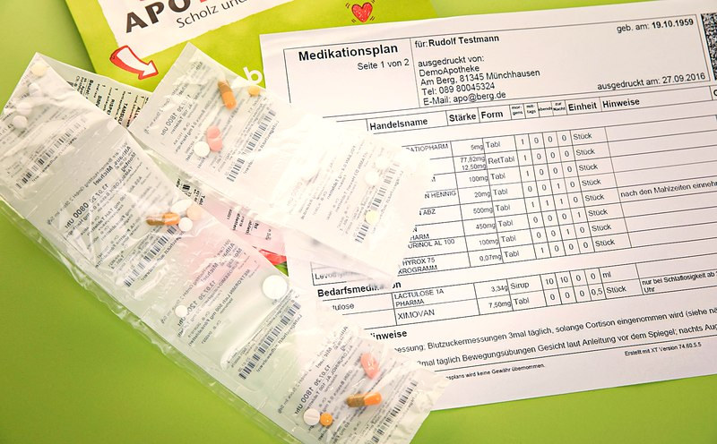
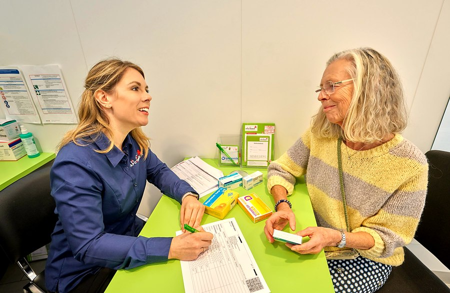

Kostenlos für gesetzlich Versicherte
5 oder mehr Medikamente?
Wir prüfen, ob sie zusammenpassen.
Ab fünf Dauermedikamenten haben Sie Anspruch auf eine kostenlose Medikationsberatung in Ihrer sk-Apotheke. Wir prüfen Wechselwirkungen, Doppelmedikationen und Einnahmefehler – im persönlichen Gespräch.
- Kostenlos für gesetzlich Versicherte
- Von Apotheker:innen durchgeführt
- Nur 3 kurze Fragen
Das eigentliche Thema
5 Medikamente.
Passt das wirklich alles zusammen?
Mehrere Erkrankungen, verschiedene Fachärzt:innen, mehrere Rezepte. Das sind Gedanken, die uns Patient:innen oft schildern – ganz normal, und genau dafür sind wir da.
Das sind ganz normale Fragen – deshalb lohnt sich ein ruhiger Blick auf das Gesamtbild. Genau dabei unterstützen wir Sie:
Wechselwirkungen
Wir prüfen, ob sich Ihre Medikamente gegenseitig beeinflussen können.
Doppelmedikationen
Wir erkennen, wenn Wirkstoffe unbeabsichtigt doppelt verordnet wurden.
Anwendungsprobleme
Wir klären offene Fragen zur richtigen Einnahme – z. B. Zeitpunkt und Dosierung.
Aktualisierter Plan
Sie erhalten einen übersichtlichen, aktuellen Medikationsplan zum Mitnehmen.
Wir betrachten Ihre gesamte Medikation – inklusive relevanter Selbstmedikation wie rezeptfreier Präparate und Nahrungsergänzungsmittel.
Für wen ist das gedacht?
Vielleicht kennen Sie diese Situation

Sie nehmen selbst mehrere Medikamente ein
„Verträgt sich das eigentlich alles?“ · „Warum bin ich in letzter Zeit so müde?“
Mehrere Erkrankungen, verschiedene Fachärzt:innen – und entsprechend mehrere Medikamente, z. B. gegen Bluthochdruck, Diabetes oder Cholesterin.

Sie unterstützen Angehörige
„Kann meine Mutter diese Medikamente zusammen einnehmen?“
Sie organisieren Rezepte, Arzttermine und den Medikamentenplan eines Angehörigen und möchten sichergehen, dass alles passt.
Nur 3 Fragen
Einfacher Anspruchscheck
Beantworten Sie drei kurze Fragen – unverbindlich und kostenlos.
So läuft es ab
Vier Schritte zu mehr Sicherheit
-
1
Anspruch prüfen ↑
In wenigen Fragen unverbindlich klären, ob Sie anspruchsberechtigt sind.
-
2
Termin vereinbaren
Online anfragen oder direkt in Ihrer sk-Apotheke anrufen.
-
3
Beratungsgespräch
Bringen Sie alle Medikamente mit. Unsere Apotheker:innen besprechen mit Ihnen die gesamte Medikation.
-
4
Aktualisierter Medikationsplan
Sie erhalten einen übersichtlichen Plan und konkrete Empfehlungen zum Mitnehmen.

Durchgeführt von Apotheker:innen mit pharmazeutischer Qualifikation
Die Medikationsberatung ist eine anerkannte pharmazeutische Dienstleistung. Unsere Apotheker:innen betrachten Ihre gesamte Medikation strukturiert und besprechen mit Ihnen verständlich, worauf es ankommt – ohne Fachchinesisch.
Häufige Fragen
Gut zu wissen
Beim Medikationscheck betrachten unsere Apotheker:innen Ihre gesamte Medikation im Zusammenspiel – einschließlich relevanter Selbstmedikation – und prüfen unter anderem auf mögliche Wechselwirkungen, Doppelmedikationen und Anwendungsprobleme. Sie erhalten anschließend einen aktualisierten Medikationsplan.
Grundsätzlich gesetzlich versicherte Patient:innen, die dauerhaft – voraussichtlich mindestens 28 Tage – fünf oder mehr verordnete Medikamente gleichzeitig einnehmen. Die genaue Anspruchsprüfung erfolgt individuell in der Apotheke.
Das lässt sich pauschal nicht beantworten, da es stark von der individuellen Medikation abhängt. Manche Wirkstoffkombinationen können sich gegenseitig verstärken, abschwächen oder Nebenwirkungen begünstigen. Genau das prüfen wir im Rahmen der Medikationsberatung für Sie.
Am zuverlässigsten im persönlichen Gespräch mit unseren Apotheker:innen im Rahmen der Medikationsberatung – dort wird Ihre gesamte Medikation strukturiert erfasst und geprüft.
Bringen Sie bitte alle Medikamente bzw. Ihren aktuellen Medikationsplan mit – inklusive rezeptfreier Präparate und Nahrungsergänzungsmittel, die Sie regelmäßig einnehmen.
Polymedikation bezeichnet die gleichzeitige, dauerhafte Einnahme mehrerer Medikamente – häufig ab fünf verschiedenen Wirkstoffen. Je mehr Medikamente gleichzeitig eingenommen werden, desto wichtiger wird die Prüfung möglicher Wechselwirkungen.
Fünf oder mehr Dauermedikamente gelten in der Pharmazie als Polymedikation – ein Punkt, an dem sich eine strukturierte Überprüfung besonders lohnt, weil die Zahl möglicher Wechselwirkungen mit jedem weiteren Medikament steigt.
Unsere Apotheker:innen sind pharmazeutisch dafür qualifiziert, Ihre gesamte Medikation zu überprüfen – unabhängig davon, wie viele verschiedene Ärzt:innen die einzelnen Medikamente verordnet haben.
Passen Ihre Medikamente zusammen?
Finden Sie es heraus – kostenlos und unverbindlich.
Alternativ auch ganz unkompliziert vor Ort in Ihrer sk-Apotheke.